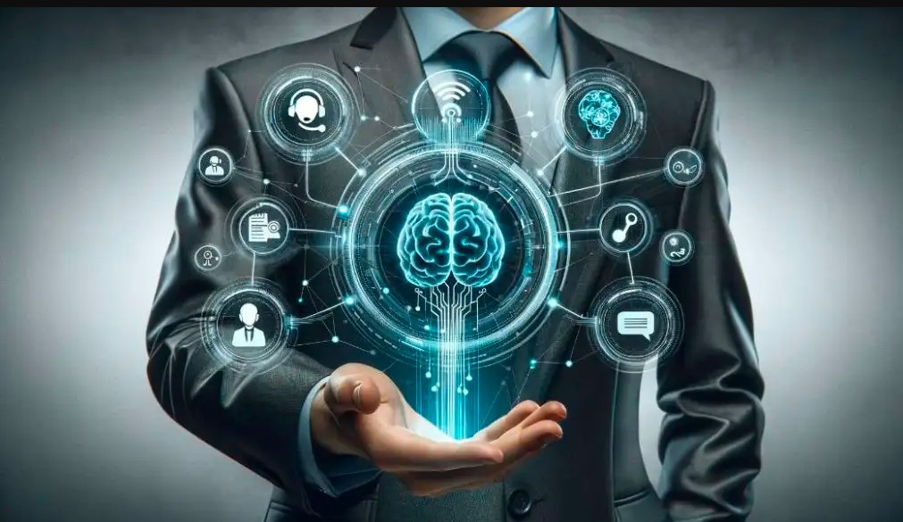

Inteligencia artificial
Què es la inteligencia artificial
La inteligencia artificial es el futuro de la busqueda y tareas autonomas y repetitivas

Tipos de inteligencia artificial
- Inteligencia artificial estrecha (IAE):Diseñada para realizar tareas específicas,como el reconocimiento facial o los asistentes virtuales.
- Inteligencia artificial general (IAG):Una forma hipotética de IA que puede realizar cualquier tarea intelectual que un ser humano pueda hacer.
- Superinteligencia artificial:Una forma avanzada de IA que supera la inteligencia humana en todos los aspectos.

Beneficios de la inteligencia altificial
- Automatizaciòn de tareas repetitivas:La Ia puede encargarse de tareas monònotonas,permitiendo a lo seres humanoso centrarse en actividades màs creativas y complejas.
- mejora de la eficiencia:Los sistemas de Ia pueden prosesar grandes cantidades de datos ràpidamete
- avances en la medicina:la ia se utiliza para el dianostico precoz de enfermedades,el desarrollo de nuevos tratamientos y la personalizaciòn de la atencion sanitaria.
- innovaciòn en diversos sectores:La ia impulsa la innovacion en campos como la automatizacion industrial,el trabajo agricola y la logistica.

Conclusiòn
La inteligencia artificial tiene el potencial de transformar nuestra sociedad de manera significativa,mejorando la eficiencia y abriendo nuevas oportunidades en diversos campos.Sin embargo,tambièn plantea desafios eticos y sociales que deben abordarse cuidadosamente.
Mas informacion en video
Mas informacion en texto
Hecho por Andri paulino paula #19